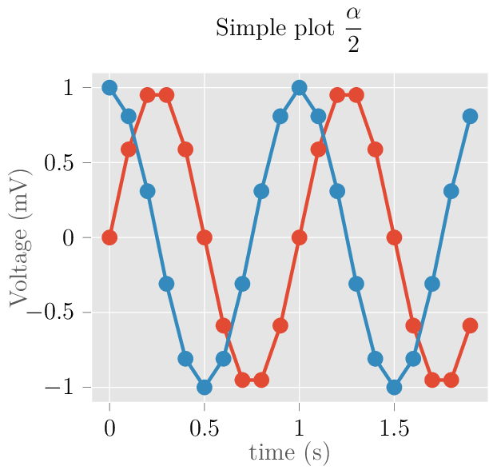

Markdown Files
Contents
Markdown Files¶
Whether you write your book’s content in Jupyter Notebooks (.ipynb) or
in regular markdown files (.md), you’ll write in the same flavor of markdown
called MyST Markdown.
This is a simple file to help you get started and show off some syntax.
What is MyST?¶
MyST stands for “Markedly Structured Text”. It is a slight variation on a flavor of markdown called “CommonMark” markdown, with small syntax extensions to allow you to write roles and directives in the Sphinx ecosystem.
For more about MyST, see the MyST Markdown Overview.
Sample Roles and Directivs¶
Roles and directives are two of the most powerful tools in Jupyter Book. They are kind of like functions, but written in a markup language. They both serve a similar purpose, but roles are written in one line, whereas directives span many lines. They both accept different kinds of inputs, and what they do with those inputs depends on the specific role or directive that is being called.
Here is a “note” directive:
Note
Here is a note
It will be rendered in a special box when you build your book.
Here is an inline directive to refer to a document: Notebooks with MyST Markdown.
Learn more¶
This is just a simple starter to get you started. You can learn a lot more at jupyterbook.org.
Latex¶
\documentclass{article} \usepackage{tikz} \begin{document} \begin{tikzpicture} \draw[gray, thick] (-1,2) – (2,-4); \draw[gray, thick] (-1,-1) – (2,2); \filldraw[black] (0,0) circle (2pt) node[anchor=west]{Intersection point}; \end{tikzpicture} \end{document}
for _ in range(10):
print("another line.")
another line.
another line.
another line.
another line.
another line.
another line.
another line.
another line.
another line.
another line.
